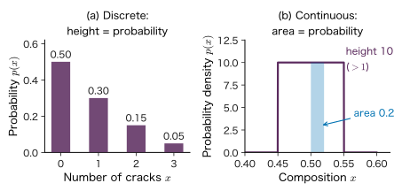
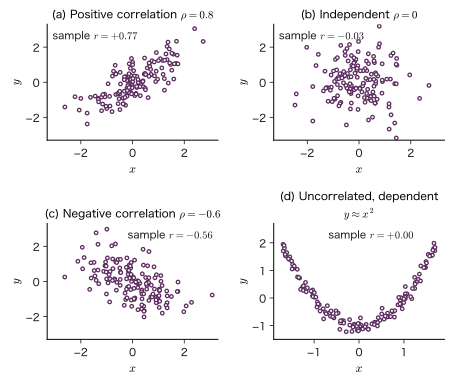
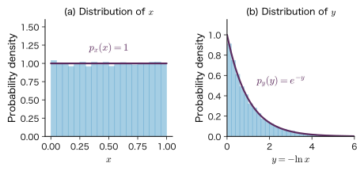
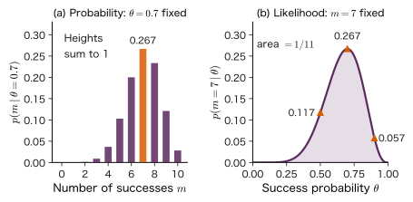
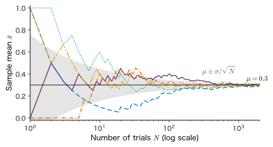
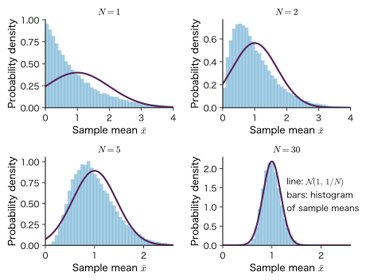

Chapter 2Probability, Expectation, and Conditional Probability — Tools for Counting Uncertainty
- In a process where only 2% of the samples have a defect, a test with 95% sensitivity judges a sample to be “defective.” What is the probability that this sample really has a defect?
- A firing succeeded 7 times out of 10. Is “the probability that the success probability is 0.7” the same thing as “the probability of 7 successes in 10 firings when the success probability is 0.7”? What is the difference between probability and likelihood?
- If we measure the same sample many times, how far can we trust the mean of the measured values? Does measuring many samples from the same batch have the same effect as measuring samples from different batches?
When a test says “defective,” we are tempted to think that the sample is almost certainly a defective one. Yet in a process where only 2% of the products are defective, if we use a test with 95% sensitivity and a 5% false-positive rate, fewer than 30% of the samples flagged “defective” really have a defect. If we test 10000 samples, 190 of the 200 defective samples are flagged “defective,” but 490 of the 9800 good samples are also flagged “defective.” The skeleton of this calculation is Bayes's theorem, which lies at the center of this chapter.
Machine learning is the technique of learning rules from data and making predictions for inputs that have not yet been seen (Chapter 1). Data always vary, and predictions always miss. The language for handling this “not knowing” with numbers is probability. In this chapter we build up, in order, probability distributions (discrete and continuous), joint distributions, marginalization, and conditional distributions, independence, Bayes's theorem, expectation (expected value), variance, and covariance, the difference between probability and likelihood, and properties of the sample mean (the law of large numbers and the central limit theorem). Starting from the basics of probability and expectation learned in Chapters 13 and 14 of University Mathematics, we assemble the tools that are used in all the remaining chapters of this book.
- Explain the difference between a probability mass function and a probability density function, and show by an example that “a density is not a probability.”
- Use the sum rule and the product rule to compute marginal and conditional distributions by hand from a table of a joint distribution.
- Decide independence and conditional independence directly from the definitions.
- Derive Bayes's theorem, compute a posterior probability in a testing problem, and explain why the prior probability strongly affects the result.
- Derive the linearity of expectation and the formulas for variance and covariance, and prove that a covariance matrix is positive semidefinite. Show by a counterexample that uncorrelated and independent are different.
- Explain the difference between viewing the same expression $p(\data\mid\theta)$ as a “probability” and as a “likelihood.”
- Derive the expectation and variance $\sigma^{2}/N$ of the sample mean, and use the standard error and the propagation of error in materials measurements.
Sections for the introductory route: 2.1, 2.2, 2.3, 2.4, 2.5, 2.7, 2.8, 2.11. Sections marked “Detailed Route” may be skipped on a first reading.
2.1 Random Variables and Probability Distributions — Height for Discrete, Area for Continuous
2.1.1 What we want to do
When we fire one sintered body, the number of cracks on its surface may be 0 or may be 2. When we make a thin film of a mixed crystal, its composition scatters around the target value. A quantity like this, whose value changes with each trial and for which it is determined which values occur in what proportions, is called a random variable. The description of which values a random variable takes and in what proportions is called a probability distribution.
A quantity that takes isolated values, such as the number of cracks (discrete), and a quantity that takes continuous values, such as the composition (continuous), are described by distributions in different ways (Figure 2.1). For a discrete quantity, “the probability that the value occurs” is represented by the height of a bar. For a continuous quantity, the probability that exactly one particular value occurs is 0, so “the probability of falling in an interval” is represented by the area under a curve. Without grasping this difference, one falls into the confusion “the probability density is 10, so is the probability 10?”

2.1.2 Definitions and notation
Notation: Writing a random variable and its value with the same lowercase letter
In University Mathematics, Chapter 14, we distinguished a random variable, written as a capital $X$, from the value it takes, written as a lowercase $x$, and wrote the expectation as $E(X)$ and the variance as $V(X)$. In machine-learning books it is customary to write a random variable and its value with the same lowercase letter $x$, and to write the expectation as $\Ex[x]$ and the variance as $\Var[x]$; this book follows that custom. Which meaning is intended is determined by the context. For example, $p(x)$ denotes “the distribution of the random variable $x$,” and $p(x=2)$ denotes “the probability of taking the value 2.” As in University Mathematics, the probability of an event $A$ is written $P(A)$.
Definition 2.1: Probability mass function (discrete)
When a random variable $x$ takes isolated values $x^{(1)},x^{(2)},\dots$, the probability $p(x)=P(\text{the random variable takes the value }x\text{ })$ of taking each value is called the probability mass function (PMF). It satisfies the following two conditions.
\begin{equation} p(x)\ge 0,\qquad \sum_{x}p(x)=1 \label{eq:2-pmf} \end{equation}The sum is taken over all possible values. Since $p(x)$ is itself a probability, $0\le p(x)\le 1$.
Definition 2.2: Probability density function (continuous)
When a random variable $x$ takes real values, a function $p(x)$ such that, for any $a\le b$,
\begin{equation} P(a\le x\le b)=\int_{a}^{b}p(x)\,\dd x \label{eq:2-interval} \end{equation}is called the probability density function (PDF). It satisfies the following two conditions.
\begin{equation} p(x)\ge 0,\quad \int_{-\infty}^{\infty}p(x)\,\dd x=1 \label{eq:2-pdf} \end{equation}If $x$ has a unit, the unit of $p(x)$ is “the reciprocal of the unit of $x$” (because $p(x)\,\dd x$ is a dimensionless probability).
In this book, we write both the probability mass function and the probability density function as $p(x)$ (which one is meant is determined by whether $x$ is discrete or continuous). In the continuous case, the following two properties are important.
- The probability of a single point is 0: setting $a=b$ in Eq. \eqref{eq:2-interval}, the width of the integral is 0, so $P(x=a)=0$. Therefore $P(a\le x\le b)$ and $P(a\lt x\lt b)$ are equal.
- A density can exceed 1: what Eq. \eqref{eq:2-pdf} requires is that “the area is 1,” not that “the height is at most 1.” The density of a distribution that is uniform on an interval of width $0.1$ is $1/0.1=10$ (Figure 2.1(b)).
The meaning of the value of $p(x)$ itself is, for a small width $\Delta x$, $P(x\le\text{random variable}\le x+\Delta x)\approx p(x)\,\Delta x$. That is, the density is “the probability per unit width,” and to obtain a probability we must always multiply by a width.
A quantity that can be used for both discrete and continuous variables is the cumulative distribution function (CDF) $F(x)=P(\text{random variable}\le x)$. In the continuous case, $F(x)=\int_{-\infty}^{x}p(x')\,\dd x'$, and by the fundamental theorem of calculus $p(x)=\diff{F}{x}$ holds (at points where $F$ is differentiable). The change of variables in Section 2.6 is derived using this relation.
Example 2.1: Reading a probability mass function and a probability density function
(1) Suppose that the number of cracks $x$ in one sintered body follows $p(0)=0.50$, $p(1)=0.30$, $p(2)=0.15$, $p(3)=0.05$ (Figure 2.1(a); a numerical example for teaching purposes). Find the probability $P(x\ge1)$ that there is at least one crack.
(2) Suppose that the composition $x$ of a thin film follows a uniform distribution on the interval $[0.45,\,0.55]$. Find the probability density $p(x)$, and find $P(0.50\le x\le 0.52)$ and $P(x=0.50)$.
Solution. (1) We use the complementary event. The complement of the event “at least one crack” is “no cracks,” so $P(x\ge1)=1-p(0)=1-0.50=0.50$. Adding directly gives $0.30+0.15+0.05=0.50$, which agrees.
(2) For a uniform distribution the density is constant within the interval, so let $p(x)=c$ ($0.45\le x\le0.55$) and 0 elsewhere. By the normalization \eqref{eq:2-pdf}, $\int_{0.45}^{0.55}c\,\dd x=0.1\,c=1$, hence $c=10$. Therefore
We also have $P(x=0.50)=\int_{0.50}^{0.50}10\,\dd x=0$. The density $p(0.50)=10$ exceeds 1, but this is not a probability, so there is no contradiction.
2.2 Joint Distributions, Marginalization, and Conditional Distributions — The Sum Rule and the Product Rule
2.2.1 Starting from a 2×2 table
In machine learning we treat two or more random variables at the same time, such as an input $x$ and an output $y$. The basic tool is a table of counts like the one below. Suppose we vary the firing temperature between two levels, “low” and “high,” and examine by X-ray diffraction (XRD) whether the fired samples contain a secondary phase (a crystalline phase other than the intended one).
| Secondary phase present | Secondary phase absent | Row sum | |
|---|---|---|---|
| Low temperature | 24 | 56 | 80 |
| High temperature | 12 | 108 | 120 |
| Column sum | 36 | 164 | 200 |
Let the firing temperature be a random variable $x\in\{\text{low},\text{high}\}$ and the presence of a secondary phase be a random variable $y\in\{\text{present},\text{absent}\}$. Consider the trial of choosing one of these 200 samples at random; then the counts divided by 200 are the probabilities. For example, the probability of “fired at low temperature and with a secondary phase” is $24/200=0.12$. We call this a joint probability and write $p(x=\text{low},y=\text{present})=0.12$. The four cells of the table as a whole form the joint distribution $p(x,y)$.
2.2.2 Marginalization and the sum rule
Summing the rows of the table gives probabilities for the temperature alone. For example, the probability of firing at low temperature is $0.12+0.28=0.40$. Eliminating a variable we are not interested in (here $y$) by summing over it in this way is called marginalization, and the resulting $p(x)$ is called the marginal distribution. The name comes from the fact that these values are written in the margins of the table.
Theorem 2.1: The sum rule
For discrete random variables $x,y$,
\begin{equation} p(x)=\sum_{y}p(x,y) \label{eq:2-sum} \end{equation}For continuous variables, replacing the sum by an integral gives $p(x)=\int p(x,y)\,\dd y$ (Section 2.6).
This follows from the fact that “the event $\{x=\text{low}\}$ is the union of the two mutually exclusive events $\{x=\text{low},y=\text{present}\}$ and $\{x=\text{low},y=\text{absent}\}$,” together with the fact that probabilities of mutually exclusive events can be added (the addition rule in University Mathematics, Chapter 13, Section 13.5).
2.2.3 Conditional distributions and the product rule
To answer the question “among the samples fired at low temperature, what fraction contain a secondary phase?”, we look only at the low-temperature row of the table (80 samples) and answer $24/80=0.30$. This is the conditional probability. In terms of probabilities, we divide the joint probability by the marginal probability of the conditioning side: $0.12/0.40=0.30$ (right side of Figure 2.2).
Definition 2.3: Conditional distribution
For $x$ with $p(x)\gt 0$, the conditional distribution of $y$ given $x$ is defined by
\begin{equation} p(y\mid x)=\frac{p(x,y)}{p(x)} \label{eq:2-cond} \end{equation}The right side of the vertical bar $\mid$ is the “condition (what is already known),” and the left side is the “object whose probability we consider.” For fixed $x$, $p(y\mid x)$ is a distribution of $y$, and it satisfies $\sum_{y}p(y\mid x)=\sum_y p(x,y)/p(x)$ $=p(x)/p(x)=1$ (we used the sum rule \eqref{eq:2-sum}).
Clearing the denominator in Eq. \eqref{eq:2-cond} gives a formula that splits the joint distribution into “conditional distribution × marginal distribution.”
Theorem 2.2: The product rule
\begin{equation} \begin{aligned} p(x,y)&=p(y\mid x)\,p(x)\\ &=p(x\mid y)\,p(y) \end{aligned} \label{eq:2-product} \end{equation}The second equality is obtained by exchanging the roles of $x$ and $y$ and using the same definition.
These two rules, the sum rule and the product rule, are the foundation of all the probability calculations used in this book. Bayes's theorem (Section 2.4), the properties of expectation (Section 2.5), graphical models (Chapter 19), and the training objective of GPT (Chapter 26) can all be written as combinations of these two rules.
Example 2.2: Finding marginal and conditional probabilities from a table
From Table 2.1, find (1) the probability that a secondary phase appears, $p(y=\text{present})$; (2) the probabilities of a secondary phase at low and at high temperature, $p(y=\text{present}\mid x=\text{low})$ and $p(y=\text{present}\mid x=\text{high})$; and (3) the probability that a sample with a secondary phase was fired at low temperature, $p(x=\text{low}\mid y=\text{present})$. (4) Verify that the product rule \eqref{eq:2-product} holds for $x=\text{low}$, $y=\text{present}$.
Solution. (1) By the sum rule, sum over the column: $p(y=\text{present})=p(\text{low},\text{present})+p(\text{high},\text{present})$ $=0.12+0.06=0.18$.
(2) By the definition \eqref{eq:2-cond}, $p(y=\text{present}\mid x=\text{low})=0.12/0.40=0.30$ and $p(y=\text{present}\mid x=\text{high})=0.06/0.60=0.10$. Computing from the counts gives the same results: $24/80=0.30$ and $12/120=0.10$.
(3) This time the condition is on the $y$ side, so we divide by the column sum: $p(x=\text{low}\mid y=\text{present})$ $=0.12/0.18=2/3\approx0.667$ ($24/36$ in terms of counts).
(4) $p(y=\text{present}\mid x=\text{low})\,p(x=\text{low})$ $=0.30\times0.40=0.12$ and $p(x=\text{low}\mid y=\text{present})\,p(y=\text{present})$ $=(2/3)\times0.18=0.12$. Both agree with the joint probability $p(\text{low},\text{present})=0.12$.
The value 0.30 in (2) and the value 0.667 in (3) are very different. The probability “if fired at low temperature, a secondary phase is likely to appear” and the probability “if a secondary phase appeared, the sample was fired at low temperature” are different things, and they must not be confused (Section 2.10).
2.2.4 Applying the product rule repeatedly — the autoregressive decomposition
The product rule can also be applied to the joint distribution of three random variables $x_1,x_2,x_3$. Regarding $(x_1,x_2)$ as a single variable and splitting off $x_3$, we get $p(x_1,x_2,x_3)=p(x_3\mid x_1,x_2)\,p(x_1,x_2)$. Since $p(x_1,x_2)=p(x_2\mid x_1)\,p(x_1)$ as well,
$$ p(x_1,x_2,x_3)=p(x_1)\,p(x_2\mid x_1)\,p(x_3\mid x_1,x_2). $$Repeating the same operation for $T$ variables (by mathematical induction on $T$), we obtain the following formula.
The factor for $t=1$ is read as the unconditioned $p(x_1)$. This formula is an identity containing no approximation at all, and it means that any joint distribution can be written as a product of “the distribution of the next value given the preceding values.” The index $t$ denotes the order (time or position in a sentence).
Advanced Topic: GPT uses the autoregressive decomposition as it is
If we regard a sentence as a sequence of words (tokens) $x_1,\dots,x_T$, Eq. \eqref{eq:2-chain} reads: “the probability of the whole sentence is the probability of the first word, times the probability of the second word after seeing the first word, times …” In Chapter 22 we treat the hidden Markov model, which shrinks the condition in this product to “only the immediately preceding state,” and in Chapter 26 we treat GPT, which reads the entire condition $x_{\lt t}$ with a Transformer and outputs the distribution $p(x_t\mid x_{\lt t})$ of the next token. It is thanks to this identity that GPT, “merely by predicting the next word, becomes a probabilistic model of the whole sentence” (Chapter 22, Section 22.3, Chapter 26, Section 26.3).
2.3 Independence and Conditional Independence
2.3.1 Independence
In Table 2.1, the probability of a secondary phase was 0.30 at low temperature and 0.10 at high temperature, so it changed with temperature. Knowing the temperature changes our prediction about the secondary phase, so the two variables are “related.” Conversely, when the distribution does not change even after we impose a condition, the two variables are said to be independent.
Definition 2.4: Independence
Random variables $x$ and $y$ are independent if, for all $x,y$,
\begin{equation} p(x,y)=p(x)\,p(y) \label{eq:2-indep} \end{equation}holds. When $p(x)\gt0$, this is equivalent to $p(y\mid x)=p(y)$ (knowing $x$ does not change the distribution of $y$).
The equivalence follows from the product rule. If Eq. \eqref{eq:2-indep} holds, then by Definition \eqref{eq:2-cond}, $p(y\mid x)=p(x)p(y)/p(x)=p(y)$. Conversely, if $p(y\mid x)=p(y)$, then by the product rule \eqref{eq:2-product}, $p(x,y)=p(y\mid x)p(x)=p(y)p(x)$. The “independent trials” of University Mathematics, Chapter 13, Section 13.5 are a special case of this definition.
In Table 2.1, whereas $p(\text{low},\text{present})=0.12$, we have $p(\text{low})\,p(\text{present})=0.40\times0.18=0.072$, so Eq. \eqref{eq:2-indep} does not hold. Temperature and the secondary phase are not independent. If it fails in even one cell, the variables are not independent. Conversely, to claim independence, we must check that it holds in every cell. (In a 2×2 table, however, if it holds in one cell, then the other three follow automatically from the relations among the marginal sums. You may want to check this after Exercise 2.1.)
Example 2.3: Judging independence from a table
Polishing operators A and B polished samples, and we examined whether each had a surface scratch (synthetic data for teaching purposes). Of A’s 60 samples, 6 had scratches; of B’s 40 samples, 4 did. Are the operator and the presence of a scratch independent?
| Scratched | Not scratched | Row sum | |
|---|---|---|---|
| Operator A | 6 | 54 | 60 |
| Operator B | 4 | 36 | 40 |
| Column sum | 10 | 90 | 100 |
Solution. Let $x$ denote the operator and $y$ the scratch. The marginal probabilities are $p(x=\text{A})=0.60$, $p(x=\text{B})=0.40$, $p(y=\text{scratch})=0.10$, and $p(y=\text{none})=0.90$. We check Eq. \eqref{eq:2-indep} in the four cells. The left-hand side is the joint probability in the table, and the right-hand side is the product $p(x)\,p(y)$ of the marginal probabilities.
$$ \begin{aligned} p(\text{A},\text{scratch})=0.06&=0.60\times0.10,\\ p(\text{A},\text{none})=0.54&=0.60\times0.90,\\ p(\text{B},\text{scratch})=0.04&=0.40\times0.10,\\ p(\text{B},\text{none})=0.36&=0.40\times0.90. \end{aligned} $$All of them agree, so the variables are independent. In terms of conditional probabilities as well, $p(\text{scratch}\mid\text{A})=6/60=0.10$ and $p(\text{scratch}\mid\text{B})=4/40=0.10$, both equal to the marginal probability 0.10 regardless of the operator.
However, this holds only “on the table of these 100 samples.” Real data contain chance variation, so the counts will almost never be exactly proportional. Judging whether variables are independent from finite data requires the ideas of estimation from Chapter 4 onward.
2.3.2 Conditional independence
In machine learning models, assumptions of the form “once we know a certain variable, the remaining variables become unrelated to one another” are often used.
Definition 2.5: Conditional independence
Given $z$, $x$ and $y$ are conditionally independent if, for all $x,y$ and all $z$ with $p(z)\gt0$,
\begin{equation} p(x,y\mid z)=p(x\mid z)\,p(y\mid z) \label{eq:2-condindep} \end{equation}holds. When $p(y,z)\gt0$, this is equivalent to $p(x\mid y,z)=p(x\mid z)$ (if we know $z$, then also knowing $y$ does not change the distribution of $x$).
Conditional independence and independence are different properties, and neither can be derived from the other. The next example is a typical case that is conditionally independent but not independent.
Illustration 2.1: Testing the same sample twice
Let $z\in\{\text{defect},\text{good}\}$ indicate whether a sample has a defect, and suppose $p(z=\text{defect})=0.02$. We perform the test twice, and let the results be $x_1,x_2\in\{+,-\}$ ($+$ is a judgment of “defective”). We assume that the errors of the test are determined only by the state of the sample and do not influence each other between the first and second tests. That is, given $z$, $x_1$ and $x_2$ are conditionally independent, with $p(x_i=+\mid\text{defect})=0.95$ and $p(x_i=+\mid\text{good})=0.05$.
The probability that both results are $+$ is obtained by using the sum rule, the product rule, and conditional independence \eqref{eq:2-condindep} in turn:
$$ \begin{aligned} &p(x_1=+,x_2=+)\\ &=\sum_{z}p(x_1=+,x_2=+\mid z)\,p(z)\\ &=\sum_{z}p(x_1=+\mid z)\,p(x_2=+\mid z)\,p(z)\\ &=0.95^{2}\times0.02+0.05^{2}\times0.98\\ &=0.01805+0.00245=0.0205 . \end{aligned} $$On the other hand, the probability of a $+$ in a single test is $p(x_1=+)=0.95\times0.02+0.05\times0.98$ $=0.068$, so $p(x_1=+)\,p(x_2=+)=0.068^{2}\approx0.0046$. Since $0.0205\ne0.0046$, $x_1$ and $x_2$ are not independent. If the first result is $+$, we learn that the sample “may be defective,” and the second result is also more likely to be $+$. When we do not know $z$, the two tests are linked through $z$.
2.4 Bayes's Theorem — Computing the Probability of a Cause Backward
2.4.1 Derivation of the theorem
In an inspection setting, what we know is the probability from cause to effect, $p(\text{effect}\mid\text{cause})$, as in “a defective sample gives a $+$ with probability 95%.” What we want to know, on the other hand, is “the probability that a sample is defective when a $+$ appears,” that is, the probability from effect to cause, $p(\text{cause}\mid\text{effect})$. Bayes's theorem is what reverses this direction.
The two ways of writing the product rule \eqref{eq:2-product} are equal: $p(y\mid x)\,p(x)=p(x\mid y)\,p(y)$. Dividing both sides by $p(y)\gt0$ gives
Theorem 2.3: Bayes's theorem
\begin{equation} \begin{gathered} p(x\mid y)=\frac{p(y\mid x)\,p(x)}{p(y)},\\ p(y)=\sum_{x'}p(y\mid x')\,p(x') \end{gathered} \label{eq:2-bayes} \end{equation}The expression for the denominator is obtained from the sum rule \eqref{eq:2-sum} and the product rule \eqref{eq:2-product} as $p(y)=\sum_{x'}p(x',y)=\sum_{x'}p(y\mid x')\,p(x')$. If $x$ is continuous, replace the sum by an integral.
If we read $x$ as the “cause (what we want to know)” and $y$ as the “observation (data),” each term has the following name.
- $p(x)$: the prior probability. The probability we hold about the cause before the observation.
- $p(y\mid x)$: the likelihood. How likely the observation $y$ is to occur if the cause were $x$. We fix the observation $y$ and regard it as a function of $x$ (Section 2.7).
- $p(x\mid y)$: the posterior probability. The probability we hold about the cause after the observation $y$.
- $p(y)$: the marginal likelihood (also called the evidence). A normalization constant that does not depend on $x$, and makes the posterior probabilities sum to 1.
In summary, “posterior ∝ likelihood × prior.” In Chapter 4, we replace the cause $x$ by the “model parameter $\theta$” and the observation $y$ by the “data $\data$,” and use the same equation for parameter estimation (Chapter 4, Section 4.3).
2.4.2 Example: defect inspection
Example 2.4: Posterior probability in defect inspection
Of the samples made in a certain process, 2% have an internal defect. An ultrasonic test judges a sample with a defect as “$+$ (defective)” with probability 95% (the sensitivity), and wrongly judges a sample without a defect as $+$ with probability 5% (the false positive rate). The numbers are a setup for teaching purposes. (1) A sample was judged $+$. Find the probability that it has a defect. (2) Find the probability that a sample has a defect when the judgment is $-$. (3) A sample judged $+$ was tested once more, and it was again $+$. Assuming that the two tests are conditionally independent given the presence or absence of a defect (Illustration 2.1), what is the probability that the sample has a defect?
Solution. Let $z\in\{\text{defect},\text{good}\}$ denote the presence or absence of a defect and $x\in\{+,-\}$ the judgment. The given values are $p(\text{defect})=0.02$, $p(+\mid\text{defect})=0.95$, and $p(+\mid\text{good})=0.05$.
(1) First we find the denominator (the marginal likelihood) by the sum rule:
$$ \begin{aligned} p(+)&=p(+\mid\text{defect})\,p(\text{defect})+p(+\mid\text{good})\,p(\text{good})\\ &=0.95\times0.02+0.05\times0.98\\ &=0.019+0.049=0.068 . \end{aligned} $$By Bayes's theorem \eqref{eq:2-bayes},
$$ p(\text{defect}\mid +)=\frac{0.95\times0.02}{0.068}=\frac{0.019}{0.068}\approx0.279 . $$Even when a sample is judged $+$, the probability that it has a defect is only about 28%.
(2) Since $p(-)=1-p(+)=0.932$ and $p(-\mid\text{defect})=1-0.95=0.05$, we get $p(\text{defect}\mid -)=0.05\times0.02/0.932$ $=0.001/0.932\approx0.00107$. A judgment of $-$ is quite trustworthy.
(3) We use the posterior probability from the first test, $q=p(\text{defect}\mid+)\approx0.2794$, as the prior probability for the second test (sequential updating):
Here $0.95\times0.2794=0.2654$ and $0.05\times0.7206=0.0360$. Using the two observations at once gives the same result. By conditional independence, $p(+,+\mid\text{defect})=0.95^{2}$ and $p(+,+\mid\text{good})=0.05^{2}$, so
$$ \begin{aligned} p(\text{defect}\mid +,+)&=\frac{0.95^{2}\times0.02}{0.95^{2}\times0.02+0.05^{2}\times0.98}\\ &=\frac{0.01805}{0.0205}\approx0.880 . \end{aligned} $$The result of (1) runs against intuition because the prior probability (2%) is small. Converting to concrete counts reveals the reason (Figure 2.3, Table 2.3). Out of 10000 samples, 200 are defective, and 190 of them come out $+$. There are as many as 9800 good samples, so even 5% of them gives 490 that come out $+$. Of the 680 samples that are $+$, only 190 are defective.
| Judgment + | Judgment − | Row sum | |
|---|---|---|---|
| Defective | 190 | 10 | 200 |
| Not defective | 490 | 9310 | 9800 |
| Column sum | 680 | 9320 | 10000 |
Table 2.3 is a joint distribution table of the same form as Table 2.1. Here $p(+\mid\text{defect})=190/200$ is the conditional probability obtained by dividing by the row, and $p(\text{defect}\mid+)=190/680$ is the conditional probability obtained by dividing by the column. Bayes's theorem can be rephrased as “a procedure for producing the column-divided probabilities from the row-divided probabilities.”
Intuition: In terms of odds, it becomes a single multiplication
For a probability $q$, the quantity $q/(1-q)$ is called the odds. If we write Bayes's theorem for “defect” and “good” and divide, the denominator $p(+)$ cancels and we obtain
$$ \frac{p(\text{defect}\mid +)}{p(\text{good}\mid +)}=\frac{p(+\mid\text{defect})}{p(+\mid\text{good})}\times\frac{p(\text{defect})}{p(\text{good})} $$That is, “posterior odds = likelihood ratio × prior odds.” In Example 2.4, the likelihood ratio is $0.95/0.05=19$ and the prior odds are $0.02/0.98\approx0.0204$, so the posterior odds are $19\times0.0204\approx0.388$, and converting to a probability gives $0.388/1.388\approx0.279$, which agrees. Passing the sample through the same test once more multiplies by another factor of 19, giving $7.37$, and the probability is $0.880$. Even with the same likelihood ratio, if the prior odds are small, the posterior probability remains small.
2.5 Expectation, Variance, Covariance, and the Correlation Coefficient
2.5.1 Expectation and its linearity
Instead of looking at an entire distribution, we often want to summarize it with a few numbers. The most basic summary is the expectation (mean); the quantity that expresses the magnitude of the spread is the variance, and the quantity that expresses how two quantities move together is the covariance. The expectation was defined in University Mathematics, Chapter 14. Here we rewrite it in machine-learning notation and extend it to two or more variables.
Definition 2.6: Expectation
The expectation of a function $f(x)$ of a random variable $x$ is defined by
\begin{equation} \begin{aligned} \Ex[f(x)]&=\sum_{x}f(x)\,p(x),\\ \Ex[f(x)]&=\int f(x)\,p(x)\,\dd x \end{aligned} \label{eq:2-expect} \end{equation}(the upper formula is for the discrete case and the lower for the continuous case; this holds only when the sum or integral converges absolutely). When $f(x)=x$, $\Ex[x]$ is called the mean of $x$ and is written $\mu$. For a function $f(x,y)$ of two variables, $\Ex[f(x,y)]=\sum_{x}\sum_{y}f(x,y)\,p(x,y)$. When we want to make explicit which distribution the average is taken over, we write $\Ex_{p}[\,\cdot\,]$.
The phrase “only when the sum or integral converges absolutely” is not mere decoration. For the Cauchy distribution (Lorentzian) treated in Chapter 3, the integral does not converge and the mean does not exist (Chapter 3, Section 3.7).
Theorem 2.4: Linearity of expectation
For constants $a,b,c$ and random variables $x,y$,
\begin{equation} \begin{aligned} &\Ex[ax+by+c]\\ &=a\,\Ex[x]+b\,\Ex[y]+c \end{aligned} \label{eq:2-linear} \end{equation}holds. It holds even if $x$ and $y$ are not independent.
Proof
We prove the discrete case (for the continuous case, replace the sums by integrals). Write the definition \eqref{eq:2-expect} for two variables and split the sum into three.
\begin{align} &\Ex[ax+by+c]\notag\\ &=\sum_{x}\sum_{y}(ax+by+c)\,p(x,y)\notag\\ &=a\sum_{x}x\sum_{y}p(x,y)\notag\\ &\quad+b\sum_{y}y\sum_{x}p(x,y)\notag\\ &\quad+c\sum_{x}\sum_{y}p(x,y)\notag\\ &=a\sum_{x}x\,p(x)+b\sum_{y}y\,p(y)+c\cdot 1\notag\\ &=a\,\Ex[x]+b\,\Ex[y]+c .\notag \end{align}In passing from the three split sums to the next line, we used the sum rule \eqref{eq:2-sum} ($\sum_y p(x,y)=p(x)$ and $\sum_x p(x,y)=p(y)$) and the normalization $\sum_x\sum_y p(x,y)=1$. The assumption of independence is not used anywhere.
∎
Linearity is convenient, but for a nonlinear function, $\Ex[f(x)]\ne f(\Ex[x])$ in general. For example, the difference between $\Ex[x^{2}]$ and $(\Ex[x])^{2}$ is the variance, which we define next.
2.5.2 Variance
Definition 2.7: Variance and standard deviation
Let $\mu=\Ex[x]$. The variance and the standard deviation of $x$ are defined by
\begin{equation} \begin{gathered} \Var[x]=\Ex\!\left[(x-\mu)^{2}\right]=\sigma^{2},\\ \sigma=\sqrt{\Var[x]} \end{gathered} \label{eq:2-var-def} \end{equation}The variance is the average of the “squared deviation from the mean,” and has the unit of the square of the unit of $x$. The standard deviation has the same unit as $x$.
Theorem 2.5: Formulas for the variance
\begin{equation} \Var[x]=\Ex[x^{2}]-(\Ex[x])^{2} \label{eq:2-var} \end{equation} \begin{equation} \Var[ax+b]=a^{2}\,\Var[x] \label{eq:2-var-shift} \end{equation}Proof
Eq. \eqref{eq:2-var}: Expand $(x-\mu)^{2}=x^{2}-2\mu x+\mu^{2}$ and use the fact that $\mu$ is a constant together with the linearity \eqref{eq:2-linear}.
$$ \begin{aligned} \Var[x]&=\Ex[x^{2}]-2\mu\,\Ex[x]+\mu^{2}\\ &=\Ex[x^{2}]-2\mu^{2}+\mu^{2}=\Ex[x^{2}]-\mu^{2}. \end{aligned} $$Eq. \eqref{eq:2-var-shift}: By linearity, $\Ex[ax+b]=a\mu+b$. Therefore $(ax+b)-\Ex[ax+b]=a(x-\mu)$, and
$$ \begin{aligned} \Var[ax+b]&=\Ex\!\left[a^{2}(x-\mu)^{2}\right]\\ &=a^{2}\,\Ex\!\left[(x-\mu)^{2}\right]=a^{2}\,\Var[x]. \end{aligned} $$Adding a constant $b$ merely translates the distribution, so the spread does not change. Multiplying by $a$ multiplies the standard deviation by $\abs{a}$.
∎
2.5.3 Covariance and the correlation coefficient
Definition 2.8: Covariance and the correlation coefficient
Let $\mu_x=\Ex[x]$ and $\mu_y=\Ex[y]$. The covariance and the correlation coefficient of $x$ and $y$ are defined by
\begin{equation} \begin{aligned} &\Cov[x,y]\\ &=\Ex\!\left[(x-\mu_x)(y-\mu_y)\right]\\ &=\Ex[xy]-\mu_x\mu_y,\\ &\rho=\frac{\Cov[x,y]}{\sqrt{\Var[x]\,\Var[y]}} \end{aligned} \label{eq:2-cov} \end{equation}(the second equality is obtained by the same expansion as in Eq. \eqref{eq:2-var}; Exercise 2.3). Also, $\Cov[x,x]=\Var[x]$. The correlation coefficient has no unit and satisfies $-1\le\rho\le1$ (Exercise 2.4).
The sign of the covariance tells us whether, when $x$ is larger than its mean, $y$ also tends to be larger than its mean (positive) or tends to be smaller (negative). The correlation coefficient divides this by the standard deviations of the two variables to remove the effects of unit and magnitude. Figure 2.4 shows samples of two variables with different correlation coefficients.

As in Figure 2.4(d), the correlation coefficient can be almost 0 even though $y$ is almost determined by $x$. What the correlation coefficient measures is only the strength of a linear relationship.
Theorem 2.6: Variance of a sum, and covariance for independent variables
\begin{equation} \begin{aligned} &\Var[x+y]\\ &=\Var[x]+\Var[y]\\ &\quad+2\,\Cov[x,y] \end{aligned} \label{eq:2-var-sum} \end{equation}Moreover, if $x$ and $y$ are independent, then $\Ex[xy]=\Ex[x]\,\Ex[y]$, hence $\Cov[x,y]=0$, and $\Var[x+y]=\Var[x]+\Var[y]$.
Proof
By linearity the mean of $x+y$ is $\mu_x+\mu_y$, so
\begin{align} \Var[x+y]&=\Ex\!\left[\bigl((x-\mu_x)+(y-\mu_y)\bigr)^{2}\right]\notag\\ &=\Ex\!\left[(x-\mu_x)^{2}\right]+\Ex\!\left[(y-\mu_y)^{2}\right]\notag\\ &\quad+2\,\Ex\!\left[(x-\mu_x)(y-\mu_y)\right]\notag\\ &=\Var[x]+\Var[y]+2\,\Cov[x,y].\notag \end{align}In the independent case, substitute $p(x,y)=p(x)p(y)$ and separate the sums:
$$ \begin{aligned} \Ex[xy]&=\sum_{x}\sum_{y}xy\,p(x)\,p(y)\\ &=\Bigl(\sum_{x}x\,p(x)\Bigr)\Bigl(\sum_{y}y\,p(y)\Bigr)=\Ex[x]\,\Ex[y]. \end{aligned} $$Hence $\Cov[x,y]=\Ex[xy]-\Ex[x]\Ex[y]=0$.
∎
The converse does not hold: even if $\Cov[x,y]=0$ (uncorrelated), the variables are not necessarily independent. Example 2.6 below is a counterexample.
Example 2.5: Finding the expectations, variances, and covariance from a table of the joint distribution
For one sintered body, let $x\in\{0,1,2\}$ be the number of cracks and $y\in\{0,1\}$ indicate the presence of a secondary phase (1 means “present”). Their joint distribution is given in Table 2.4 (a numerical example for teaching purposes). Find $\Ex[x]$, $\Ex[y]$, $\Var[x]$, $\Var[y]$, $\Cov[x,y]$, $\rho$, and $\Var[x+y]$.
| $y=0$ | $y=1$ | $p(x)$ | |
|---|---|---|---|
| $x=0$ | 0.40 | 0.10 | 0.50 |
| $x=1$ | 0.15 | 0.15 | 0.30 |
| $x=2$ | 0.05 | 0.15 | 0.20 |
| $p(y)$ | 0.60 | 0.40 | 1 |
Solution. The marginal distributions are written at the right and bottom of the table (sum rule).
- $\Ex[x]=0\times0.50+1\times0.30+2\times0.20$ $=0.70$, $\Ex[x^{2}]=0+1\times0.30+4\times0.20=1.10$, $\Var[x]=1.10-0.70^{2}=0.61$.
- $\Ex[y]=0.40$, $\Ex[y^{2}]=0.40$ (since $y^{2}=y$), $\Var[y]=0.40-0.16=0.24$.
- For $\Ex[xy]$, only the cells with $xy\ne0$ ($x\ge1$ and $y=1$) contribute: $\Ex[xy]=1\times1\times0.15$ $+2\times1\times0.15=0.45$.
- $\Cov[x,y]=0.45-0.70\times0.40$ $=0.45-0.28=0.17$.
- $\rho=0.17/\sqrt{0.61\times0.24}$ $=0.17/\sqrt{0.1464}$ $=0.17/0.3826\approx0.444$.
- $\Var[x+y]=0.61+0.24$ $+2\times0.17=1.19$.
The last value agrees with what we get directly from the distribution of $s=x+y$: $s$ takes the values $0,1,2,3$ with probabilities $0.40,\,0.25,\,0.20,\,0.15$ ($s=1$ is the sum over $(0,1)$ and $(1,0)$, and $s=2$ is the sum over $(1,1)$ and $(2,0)$), and $\Ex[s]=1.10$, $\Ex[s^{2}]=0.25+0.80+1.35=2.40$, $\Var[s]=2.40-1.21=1.19$. Because the covariance is positive, assuming independence and computing $0.61+0.24=0.85$ would underestimate the spread.
Example 2.6: Uncorrelated but not independent
Suppose $x$ takes each of the values $-1,0,1$ with probability $1/3$, and $y=x^{2}$. Show that $\Cov[x,y]=0$ but that $x$ and $y$ are not independent.
Solution. $\Ex[x]=(-1+0+1)/3=0$. Since $xy=x^{3}$ takes each of $-1,0,1$ with probability $1/3$, $\Ex[xy]=0$. Hence $\Cov[x,y]=\Ex[xy]-\Ex[x]\Ex[y]=0-0=0$, so they are uncorrelated.
On the other hand, $y=0$ occurs only when $x=0$, so $p(y=0)=1/3$, but $p(y=0\mid x=0)=1$. Since $p(y\mid x)\ne p(y)$, they are not independent. Although $y$ is completely determined by $x$, the relationship is not linear (it is left-right symmetric), so the covariance cancels out to 0. Figure 2.4(d) is this example with noise added.
2.5.4 The covariance matrix is positive semidefinite
When the input is a vector $\bm{x}=(x_1,\dots,x_D)^{\tp}\in\R^{D}$ with $D$ components, we use the mean vector $\bm{\mu}=\Ex[\bm{x}]\in\R^{D}$ (the expectation of each component) and the matrix that arranges the covariances of all pairs.
Definition 2.9: Covariance matrix
\begin{equation} \begin{aligned} \bm{\Sigma}&=\Cov[\bm{x}]\in\R^{D\times D}\\ &=\Ex\!\left[(\bm{x}-\bm{\mu})(\bm{x}-\bm{\mu})^{\tp}\right],\\ \Sigma_{ij}&=\Cov[x_i,x_j] \end{aligned} \label{eq:2-covmat} \end{equation}Since $(\bm{x}-\bm{\mu})$ is $D\times1$ and $(\bm{x}-\bm{\mu})^{\tp}$ is $1\times D$, their product is a $D\times D$ matrix, and the expectation is taken componentwise. The diagonal component $\Sigma_{ii}=\Var[x_i]$ is the variance of each component. Since $\Cov[x_i,x_j]=\Cov[x_j,x_i]$, $\bm{\Sigma}$ is a symmetric matrix.
Theorem 2.7: The covariance matrix is positive semidefinite
For any constant vector $\bm{a}\in\R^{D}$,
\begin{equation} \bm{a}^{\tp}\bm{\Sigma}\bm{a}=\Var\!\left[\bm{a}^{\tp}\bm{x}\right]\ge 0 \label{eq:2-psd} \end{equation}holds. That is, $\bm{\Sigma}$ is positive semidefinite.
Proof
Consider the scalar random variable $u=\bm{a}^{\tp}\bm{x}=\sum_{i}a_i x_i$. By linearity \eqref{eq:2-linear}, $\Ex[u]=\bm{a}^{\tp}\bm{\mu}$, so $u-\Ex[u]=\bm{a}^{\tp}(\bm{x}-\bm{\mu})$. This is a scalar, so its transpose has the same value $(\bm{x}-\bm{\mu})^{\tp}\bm{a}$. Therefore
\begin{align} \Var[u]&=\Ex\!\left[\bigl(\bm{a}^{\tp}(\bm{x}-\bm{\mu})\bigr)\bigl((\bm{x}-\bm{\mu})^{\tp}\bm{a}\bigr)\right]\notag\\ &=\bm{a}^{\tp}\,\Ex\!\left[(\bm{x}-\bm{\mu})(\bm{x}-\bm{\mu})^{\tp}\right]\bm{a}=\bm{a}^{\tp}\bm{\Sigma}\bm{a}.\notag \end{align}In the second line, we moved the constants $\bm{a}^{\tp}$ and $\bm{a}$ outside the expectation (written in components, this is $\sum_{i,j}a_i a_j\,\Ex[(x_i-\mu_i)(x_j-\mu_j)]$, which is just linearity). Since the variance is the expectation of a square, it cannot be negative. Hence $\bm{a}^{\tp}\bm{\Sigma}\bm{a}\ge0$.
∎
From this property, all eigenvalues of $\bm{\Sigma}$ are nonnegative (for an eigenvector $\bm{a}$, $\bm{a}^{\tp}\bm{\Sigma}\bm{a}=\lambda\norm{\bm{a}}^{2}\ge0$). An eigenvalue is 0 when some linear combination $\bm{a}^{\tp}\bm{x}$ does not vary (takes a constant value). For example, if we use the composition fractions $x_1+x_2+x_3=1$ of all three components as inputs, the variance is 0 for $\bm{a}=(1,1,1)^{\tp}$, and $\bm{\Sigma}$ becomes singular. In the multivariate Gaussian distribution (Chapter 3, Section 3.6) and the Gaussian process (Chapter 12, Section 12.2), this property of $\bm{\Sigma}$ is the foundation of the theory. The determinant of the 2×2 covariance matrix $\begin{pmatrix}0.61&0.17\\0.17&0.24\end{pmatrix}$ of Example 2.5 is $0.61\times0.24-0.17^{2}=0.1175\gt0$, and the diagonal components are also positive, so it is indeed positive definite.
2.6 Joint Densities of Continuous Variables and Change of VariablesDetailed Route
2.6.1 Joint, marginal, and conditional densities
The joint density $p(x,y)$ of two continuous random variables $x,y$ is the function that gives the probability that $(x,y)$ falls in a region $A$ of the plane as
$$ P\bigl((x,y)\in A\bigr)=\iint_{A}p(x,y)\,\dd x\,\dd y $$(where $p\ge0$ and the integral over the whole plane is 1). If we replace the sums of the discrete case by integrals, the sum rule, the product rule, and Bayes's theorem hold as they are.
\begin{equation} \begin{gathered} p(x)=\int p(x,y)\,\dd y,\\ p(y\mid x)=\frac{p(x,y)}{p(x)},\\ p(x\mid y)=\frac{p(y\mid x)\,p(x)}{\int p(y\mid x')\,p(x')\,\dd x'} \end{gathered} \label{eq:2-cont-rules} \end{equation}The conditional density $p(y\mid x)$ can be read as the “slice” obtained by fixing $x$, normalized by dividing by the area $p(x)$ of that slice.
Example 2.7: A uniform joint density on a triangle
Suppose $(x,y)$ is uniformly distributed on the triangle $0\le y\le x\le1$. (1) Find the joint density $p(x,y)$. (2) Find the marginal densities $p(x)$ and $p(y)$. (3) Find the conditional density $p(y\mid x)$. (4) Find $\Ex[x]$, $\Ex[y]$, and $\Cov[x,y]$.
Solution. (1) The area of the triangle is $1/2$, so for a constant density $c$ we have $c\times\tfrac12=1$, hence $c=2$. Thus $p(x,y)=2$ inside the triangle and 0 outside.
(2) If we fix $x$, then $y$ runs from $0$ to $x$, so $p(x)=\int_{0}^{x}2\,\dd y=2x$ ($0\le x\le1$). If we fix $y$, then $x$ runs from $y$ to 1, so $p(y)=\int_{y}^{1}2\,\dd x=2(1-y)$ ($0\le y\le1$). Each integrates to 1 over $[0,1]$.
(3) $p(y\mid x)=p(x,y)/p(x)=2/(2x)=1/x$ ($0\le y\le x$). Given $x$, $y$ follows the uniform distribution on $[0,x]$. For example, if $x=0.8$, then $P(y\le0.5\mid x=0.8)=0.5/0.8=0.625$.
(4) $\Ex[x]=\int_0^1 x\cdot2x\,\dd x=2/3$, $\Ex[y]=\int_0^1 y\cdot2(1-y)\,\dd y$ $=2(1/2-1/3)=1/3$.
Since $p(x,y)=2\ne p(x)p(y)=4x(1-y)$, the variables are not independent, and the covariance is also positive (the larger $x$ is, the wider the range that $y$ can take).
2.6.2 Change of variables
We often do not use a measured quantity $x$ as it is, but transform it, for example to $y=\ln x$ or $y=x^{3}$. In the discrete case, this merely renames the values and the probabilities do not change, but a continuous density changes its values under a transformation. This is because a density is “probability per unit width,” and a transformation stretches or shrinks the width.
Theorem 2.8: Change of variables for one variable
Let the density of $x$ be $p_x(x)$, let $y=g(x)$ be strictly monotone and differentiable (on the range of values that $x$ can take), and let its inverse function be $x=g^{-1}(y)$. Then the density of $y$ is
\begin{equation} p_y(y)=p_x\bigl(g^{-1}(y)\bigr)\,\abs{\diff{x}{y}} \label{eq:2-transform} \end{equation}Even though we use the same symbol $p$, the density of $x$ and the density of $y$ are different functions, so here we distinguish them with subscripts.
Derivation
We start from the cumulative distribution function. If $g$ is an increasing function, then “$y\le c$” and “$x\le g^{-1}(c)$” are the same event, so
$$ \begin{aligned} F_y(c)=P(y\le c)&=P\bigl(x\le g^{-1}(c)\bigr)\\ &=F_x\bigl(g^{-1}(c)\bigr). \end{aligned} $$Differentiating both sides with respect to $c$ and using the chain rule ($F_x'=p_x$), we obtain:
$$ p_y(c)=p_x\bigl(g^{-1}(c)\bigr)\,\diff{g^{-1}(c)}{c}. $$If $g$ is a decreasing function, then “$y\le c$” is the same as “$x\ge g^{-1}(c)$,” so $F_y(c)=1-F_x\bigl(g^{-1}(c)\bigr)$, and differentiating gives $p_y(c)=-p_x\bigl(g^{-1}(c)\bigr)\,\dd g^{-1}(c)/\dd c$. In this case $\dd g^{-1}/\dd c\lt0$, so the right-hand side is positive. Combining the two cases gives Eq. \eqref{eq:2-transform}, in which the derivative carries an absolute value.
Intuitively, this is the “conservation of probability”: the probability $p_x\,\abs{\dd x}$ of falling in an interval of width $\dd x$ equals the probability $p_y\,\abs{\dd y}$ of falling in the interval of width $\dd y$ to which it is carried.
∎
For the logarithmic transformation $y=\ln x$ ($x\gt0$), we have $x=e^{y}$ and $\dd x/\dd y=e^{y}$, so $p_y(y)=p_x(e^{y})\,e^{y}$. For example, if $x$ is uniformly distributed on $[1,e]$ ($p_x=1/(e-1)$), then $y=\ln x$ has density $e^{y}/(e-1)$ on $[0,1]$, which is no longer uniform.
Example 2.8: Making an exponential distribution from uniform random numbers
When $x$ follows the uniform distribution on the interval $(0,1)$, find the density of $y=-\ln x$. Also find $P(y\gt1)$.
Solution. $y=-\ln x$ is a decreasing function on $(0,1)$, and $y$ ranges over $(0,\infty)$. The inverse function is $x=e^{-y}$, and $\dd x/\dd y=-e^{-y}$. Since $p_x=1$, Eq. \eqref{eq:2-transform} gives
$$ p_y(y)=1\times\abs{-e^{-y}}=e^{-y}\qquad(y\gt0). $$This is the exponential distribution with mean 1 (Chapter 3, Section 3.1). Normalization is also satisfied, since $\int_0^\infty e^{-y}\,\dd y=1$. We have $P(y\gt1)=\int_1^\infty e^{-y}\,\dd y=e^{-1}\approx0.368$. This agrees with the value obtained directly as $P(-\ln x\gt1)=P(x\lt e^{-1})=e^{-1}$. Figure 2.5 shows that the histogram of a sample generated with random numbers agrees with this density.

In the multivariable case, the absolute value of the derivative is replaced by the absolute value of the Jacobian determinant (the determinant of the Jacobian matrix $\partial\bm{x}/\partial\bm{y}$). When $\bm{y}=\bm{g}(\bm{x})$ ($\bm{x},\bm{y}\in\R^{D}$) is one-to-one and differentiable,
\begin{equation} \begin{gathered} p_{\bm{y}}(\bm{y})=p_{\bm{x}}(\bm{x})\,\abs{\det\pdiff{\bm{x}}{\bm{y}}},\\ \left(\pdiff{\bm{x}}{\bm{y}}\right)_{ij}=\pdiff{x_i}{y_j} \end{gathered} \label{eq:2-jacobian} \end{equation}holds. This applies the fact that, in a change of variables in a multiple integral, the area (volume) element is multiplied by $\abs{\det}$ (University Mathematics, Chapter 7, Section 7.3) to the conservation of probability.
Caution: The location of the maximum of a density moves under a transformation
Because of the factor $\abs{\dd x/\dd y}$ in Eq. \eqref{eq:2-transform}, even if we map the $x$ at which $p_x$ is maximal through $g$, it does not necessarily become the $y$ at which $p_y$ is maximal. In Example 2.8, $p_x$ is flat, but $p_y$ is maximal at $y=0$. This reappears in Chapter 4 in the form “the MAP estimate (the maximum point of the posterior density) changes when we change how the parameter is expressed” (Chapter 4, Section 4.7).
2.7 The Difference Between Probability and Likelihood
2.7.1 Two ways of reading the same expression
Suppose we perform firing 10 times, and $m$ of these are acceptable. Let the probability of acceptance in each trial be $\theta$ ($0\le\theta\le1$), and suppose the trials are independent. The probability that $m$ out of $N$ trials are acceptable is, by the formula for repeated trials (University Mathematics, Chapter 13, Section 13.5),
\begin{equation} \begin{gathered} p(m\mid\theta)=\binom{N}{m}\theta^{m}(1-\theta)^{N-m},\\ m=0,1,\dots,N \end{gathered} \label{eq:2-binom} \end{equation}(where $\binom{N}{m}={}_N\mathrm{C}_m$; we treat it in detail as the binomial distribution in Chapter 3, Section 3.2). This single expression can be read in two ways (Figure 2.6).
- Reading it as a probability: fix $\theta$ and view it as a function of $m$. This is the probability mass function of $m$, and it satisfies $\sum_{m=0}^{N}p(m\mid\theta)=1$ (the binomial theorem $(\theta+(1-\theta))^{N}=1$). It answers “if the acceptance probability is 0.7, how many acceptances out of 10 trials are likely?”
- Reading it as a likelihood: fix the data $m$ at the observed value and view it as a function of $\theta$. This is called the likelihood function, and is written $L(\theta)$ or $p(\data\mid\theta)$. We compare “which $\theta$ explains well the data that 7 out of 10 trials were acceptable.”

Definition 2.10: Likelihood
When the probability (or density) of data $\data$ is given by an expression $p(\data\mid\theta)$ containing a parameter $\theta$, the expression viewed as a function of $\theta$ with $\data$ fixed at the observed value is called the likelihood.
\begin{equation} \begin{gathered} L(\theta)=p(\data\mid\theta)\\ (\data\ \text{is fixed, }\theta\ \text{is the variable}) \end{gathered} \label{eq:2-lik} \end{equation}The likelihood is not a probability distribution over $\theta$. In general, it does not integrate to 1 over $\theta$.
Example 2.9: The likelihood of 7 acceptances in 10 trials
Out of $N=10$ trials, $m=7$ were acceptable. (1) Find the likelihood $L(\theta)$ at $\theta=0.5,\,0.7,\,0.9$. (2) Find $L(0.7)/L(0.5)$ and state its meaning. (3) Find $\int_0^1 L(\theta)\,\dd\theta$ and verify that the likelihood is not a probability distribution over $\theta$.
Solution. Since $\binom{10}{7}=120$, $L(\theta)=120\,\theta^{7}(1-\theta)^{3}$.
(1) $L(0.5)=120\times0.5^{10}=120/1024\approx0.117$. $L(0.7)=120\times0.7^{7}\times0.3^{3}$ $=120\times0.08235\times0.027$ $\approx0.267$. $L(0.9)=120\times0.9^{7}\times0.1^{3}$ $=120\times0.4783\times0.001$ $\approx0.0574$.
(2) $L(0.7)/L(0.5)\approx0.267/0.117\approx2.28$. The data “7 out of 10” is about 2.3 times as likely to occur under $\theta=0.7$ as under $\theta=0.5$. This does not mean that “the probability that $\theta=0.7$ is 2.3 times the probability that $\theta=0.5$.” To speak of the probability of $\theta$ we need a prior distribution and Bayes's theorem (Chapter 4, Section 4.3).
(3) We use the beta function $B(a,b)=\int_0^1\theta^{a-1}(1-\theta)^{b-1}\dd\theta$ $=\dfrac{(a-1)!\,(b-1)!}{(a+b-1)!}$ (when $a,b$ are positive integers; University Mathematics, Chapter 32, Section 32.4).
Since it is not 1, $L(\theta)$ is not a density of $\theta$. On the other hand, if we sum over $m$ from the viewpoint of (a), then $\sum_{m=0}^{10}p(m\mid0.7)=1$. In general, for $m$ out of $N$ trials, $\int_0^1 L\,\dd\theta=1/(N+1)$ (Exercise 2.6).
2.7.2 The likelihood of independent data is a product
Suppose the data consist of $N$ observations $\data=\{x_1,\dots,x_N\}$, and, given $\theta$, each observation independently follows the same distribution $p(x\mid\theta)$ (the i.i.d. condition of Section 2.8). Extending the definition of independence \eqref{eq:2-indep} to $N$ variables, we obtain
\begin{equation} \begin{gathered} p(\data\mid\theta)=\prod_{n=1}^{N}p(x_n\mid\theta),\\ \ln p(\data\mid\theta)=\sum_{n=1}^{N}\ln p(x_n\mid\theta) \end{gathered} \label{eq:2-iid-lik} \end{equation}The log-likelihood on the right turns the product into a sum, which makes it easy to differentiate, and it also prevents the numbers in a computer from collapsing to 0 (underflow) when hundreds of small probabilities are multiplied together. Since $\ln$ is monotonically increasing, the $\theta$ that maximizes the likelihood and the $\theta$ that maximizes the log-likelihood are the same. If we write the pass/fail outcomes of the $N=10$ trials in the example above as $x_n\in\{0,1\}$, the product of $p(x_n\mid\theta)=\theta^{x_n}(1-\theta)^{1-x_n}$ becomes $\theta^{7}(1-\theta)^{3}$, which differs from Eq. \eqref{eq:2-binom} only by the constant factor $\binom{10}{7}$. A constant factor does not affect the comparison of $\theta$ values.
Choosing the $\theta$ that maximizes the likelihood is maximum likelihood estimation (MLE); in Figure 2.6(b), the maximum point is $\theta=0.7=m/N$. Its derivation is in Chapter 4, Section 4.2, and Bayesian inference, which combines a prior distribution, is treated from Section 4.3 onward. Many of the loss functions commonly used in machine learning (squared error and cross-entropy) are derived as this negative log-likelihood (Chapter 5, Section 5.5, Chapter 8, Section 8.3, Chapter 9, Section 9.3).
2.8 I.I.D. Samples and the Sample Mean — The Law of Large Numbers and the Central Limit Theorem
2.8.1 I.i.d. and the sample mean
Definition 2.11: Independent and identically distributed (i.i.d.)
Random variables $x_1,\dots,x_N$ are independent and identically distributed (i.i.d.) if they are independent of one another and all follow the same distribution $p(x)$. In this case the joint distribution is $p(x_1,\dots,x_N)=\prod_{n=1}^{N}p(x_n)$. We call $x_1,\dots,x_N$ a sample from the distribution $p(x)$, and $N$ the sample size.
The situation “measuring the same quantity of the same sample repeatedly, under the same conditions, without the measurements influencing one another” can be represented by an i.i.d. model. Many machine learning methods also assume that the training data are i.i.d. We treat examples in which this assumption breaks down in Section 2.10.
Let the mean of $p(x)$ be $\mu$ and its variance be $\sigma^{2}$ (finite). We define the sample mean of the sample by
$$ \bar{x}=\frac{1}{N}\sum_{n=1}^{N}x_n $$The quantity $\bar{x}$ is also a random variable (its value changes each time we draw a new sample).
Theorem 2.9: Expectation and variance of the sample mean
\begin{equation} \Ex[\bar{x}]=\mu,\quad \Var[\bar{x}]=\frac{\sigma^{2}}{N} \label{eq:2-mean-var} \end{equation}Derivation
Expectation: we apply linearity \eqref{eq:2-linear} to $N$ terms.
$$ \Ex[\bar{x}]=\frac1N\sum_{n=1}^{N}\Ex[x_n]=\frac1N\cdot N\mu=\mu . $$Variance: pulling the constant $1/N$ out using Eq. \eqref{eq:2-var-shift} multiplies the variance by $(1/N)^{2}$. For the variance of a sum, extending Eq. \eqref{eq:2-var-sum} to $N$ terms gives
$$ \Var\Bigl[\sum_{n}x_n\Bigr]=\sum_{n}\Var[x_n]+\sum_{n\ne n'}\Cov[x_n,x_{n'}] $$(the sum over $n\ne n'$ runs over all ordered pairs; the $2\Cov$ for two variables corresponds to these two terms). Since the variables are independent, $\Cov[x_n,x_{n'}]=0$ (Theorem 2.6). Hence
$$ \begin{aligned} \Var[\bar{x}]&=\frac{1}{N^{2}}\sum_{n=1}^{N}\Var[x_n]\\ &=\frac{1}{N^{2}}\cdot N\sigma^{2}=\frac{\sigma^{2}}{N}. \end{aligned} $$∎
The standard deviation of the sample mean is $\sigma/\sqrt{N}$, and we call it the standard error. Increasing the sample size fourfold halves the standard error. To reduce the spread to $1/10$, we must increase the sample size 100-fold.
2.8.2 The law of large numbers
Since $\Var[\bar{x}]=\sigma^{2}/N\to0$ ($N\to\infty$), the distribution of $\bar{x}$ becomes narrower and narrower around $\mu$. The law of large numbers expresses this fact.
Theorem 2.10: Law of large numbers (weak law)
Suppose $x_1,x_2,\dots$ are i.i.d. with mean $\mu$ and finite variance $\sigma^{2}$. Then for any $\varepsilon\gt0$,
$$ P\bigl(\abs{\bar{x}-\mu}\ge\varepsilon\bigr)\le\frac{\sigma^{2}}{N\varepsilon^{2}}\ \longrightarrow\ 0\qquad(N\to\infty). $$Advanced Topic: Outline of the proof via Chebyshev's inequality
For any random variable $u$ (with mean $\mu_u$ and variance $\sigma_u^{2}$), $P(\abs{u-\mu_u}\ge\varepsilon)\le\sigma_u^{2}/\varepsilon^{2}$ holds (Chebyshev's inequality). Reason: in the region where $\abs{u-\mu_u}\ge\varepsilon$ we have $(u-\mu_u)^{2}/\varepsilon^{2}\ge1$, so the probability of that region is at most $\Ex[(u-\mu_u)^{2}/\varepsilon^{2}]=\sigma_u^{2}/\varepsilon^{2}$ (we replaced the integrand by a value that is at least 0 outside the region and at least 1 inside it). Applying this with $u=\bar{x}$ and $\sigma_u^{2}=\sigma^{2}/N$ gives Theorem 2.10. Note that this uses the fact that the variance is finite.

2.8.3 The central limit theorem
The law of large numbers states that $\bar{x}$ approaches $\mu$. The central limit theorem states in what form it approaches. Since $\bar{x}-\mu$ is of magnitude about $\sigma/\sqrt{N}$, we magnify it by dividing by that quantity.
Theorem 2.11: Central limit theorem
Suppose $x_1,x_2,\dots$ are i.i.d. with mean $\mu$ and finite variance $\sigma^{2}\gt0$. Then the distribution of
\begin{equation} z_N=\frac{\bar{x}-\mu}{\sigma/\sqrt{N}} \label{eq:2-clt} \end{equation}approaches the Gaussian distribution $\Normal(z\mid0,1)$ with mean 0 and variance 1 as $N\to\infty$. Here $\Normal(z\mid\mu,\sigma^{2})=\dfrac{1}{\sqrt{2\pi\sigma^{2}}}\exp\!\left[-\dfrac{(z-\mu)^{2}}{2\sigma^{2}}\right]$ is the density of the Gaussian distribution (for details see Chapter 3, Section 3.5).
We do not prove this in this book (we leave it to textbooks on probability theory). What matters is that the result does not depend on the shape of the original distribution $p(x)$. In Figure 2.8, the sample mean from the asymmetric exponential distribution (mean 1, variance 1) almost coincides with the Gaussian distribution $\Normal(1,\,1/N)$ at $N=30$. In practice we may read this as “$\bar{x}$ approximately follows $\Normal(\mu,\,\sigma^{2}/N)$”; for example, the probability that $\bar{x}$ falls within $\mu\pm1.96\,\sigma/\sqrt{N}$ is about 95%.

Both theorems assume that the variance is finite. For the Cauchy distribution of Chapter 3 (which has the same form as the Lorentzian line shape in spectroscopy), neither the mean nor the variance exists, and the sample mean does not settle down no matter how many samples we collect (Chapter 3, Section 3.7). It is not true that “everything converges if we measure many times and average.”
Example 2.10: How many measurements are enough?
It is known that the spread (standard deviation) of a single measurement of the Vickers hardness of a certain sintered body is $\sigma=12\ \mathrm{HV}$ (a setting for teaching purposes). (1) Find the standard error when we measure 9 times and average. (2) How many measurements are needed to make the standard error at most $2\ \mathrm{HV}$? (3) The mean of the 9 measurements was $\bar{x}=610\ \mathrm{HV}$. Using the approximation from the central limit theorem, in roughly what range can we say the true mean $\mu$ lies?
Solution. (1) By Eq. \eqref{eq:2-mean-var}, the standard error is $\sigma/\sqrt{N}=12/\sqrt{9}=4\ \mathrm{HV}$.
(2) From $12/\sqrt{N}\le2$ we get $\sqrt{N}\ge6$, so $N\ge36$. The answer is 36 measurements (4 times 9).
(3) Since $\bar{x}$ approximately follows $\Normal(\mu,\,4^{2})$, the probability that $\abs{\bar{x}-\mu}\le1.96\times4\approx7.8\ \mathrm{HV}$ is about 95%. Therefore we can estimate that $\mu$ lies roughly in the range $610\pm8\ \mathrm{HV}$. However, the precise interpretation of this interval (the difference between a confidence interval and a credible interval) is treated in Chapter 4, Section 4.9. Also, if $\sigma$ is unknown and is estimated from the sample, the interval becomes somewhat wider (Student's t distribution in Chapter 3, Section 3.9).
2.9 Connections to Materials Engineering and Condensed Matter Physics — Repeated Measurements and Propagation of ErrorDetailed Route
Every physical property value of a material is obtained from measurement. Measured values scatter because of fluctuations in the instrument reading, differences in the microstructure of the sample from place to place, variations in the environment (temperature and humidity), and so on. The tools of this chapter can be used as they are to handle this scatter numerically and to answer the question, “How far can we trust this value?” The international guide to expressing measurement uncertainty (JCGM 100:2008, the so-called GUM) is also built on the variance, the covariance, and the first-order approximation of this chapter.
2.9.1 Repeated measurements and the standard error
Vickers hardness is obtained by pressing a square-pyramidal diamond indenter into a sample and measuring the diagonal lengths of the remaining indentation. Even for the same sample, the value scatters depending on the crystal grain or the presence of a pore at the place where the indenter is pressed. If the $N$ measured values $x_1,\dots,x_N$ can be regarded as i.i.d., the results of Section 2.8 can be used as they are.
- The estimate of the true mean $\mu$ is the sample mean $\bar{x}$.
- The scatter $\sigma$ of a single measurement is actually unknown, so we estimate it from the sample by $s=\sqrt{\frac{1}{N-1}\sum_{n}(x_n-\bar{x})^{2}}$ (the reason for dividing by $N-1$ rather than $N$ will be derived in Chapter 4, Section 4.2).
- The uncertainty of $\bar{x}$ is expressed by the standard error $s/\sqrt{N}$. When reporting, always state which quantity it is (the scatter $s$ of a single measurement, or the uncertainty $s/\sqrt{N}$ of the mean) and $N$, as in “$\bar{x}\pm s/\sqrt{N}$ (mean of $N$ measurements)”.
In the language of machine learning, this corresponds to the distinction between aleatoric uncertainty (arising from noise; the scatter $\sigma^{2}$ of a single measurement) and epistemic uncertainty (arising from lack of knowledge; the uncertainty $\sigma^{2}/N$ of the estimate of the mean). Only the latter decreases when we increase the data. In the Gaussian processes of Chapter 4, Section 4.8 and Chapter 12, Section 12.6, this distinction appears as the width of the prediction band.
2.9.2 Propagation of error (first-order approximation)
We want to estimate the uncertainty of a quantity such as density, thermal conductivity, or resistivity that is computed from several measured values. Let the desired quantity be $f(x,y)$, and let the means of $x,y$ be $\mu_x,\mu_y$. If the scatter is small, we can expand $f$ in a Taylor series around the mean up to first order.
$$ f(x,y)\approx f(\mu_x,\mu_y)+\pdiff{f}{x}(x-\mu_x)+\pdiff{f}{y}(y-\mu_y) $$(The partial derivatives are evaluated at $(\mu_x,\mu_y)$ and are constants.) The right-hand side is a linear expression in $x,y$, so Eqs. \eqref{eq:2-var-shift} and \eqref{eq:2-var-sum} can be used as they are.
Formula 2.12: First-order approximation of the propagation of error
\begin{equation} \begin{aligned} &\Var[f]\\ &\approx\left(\pdiff{f}{x}\right)^{2}\sigma_x^{2}\\ &+\left(\pdiff{f}{y}\right)^{2}\sigma_y^{2}\\ &+2\,\pdiff{f}{x}\pdiff{f}{y}\,\Cov[x,y] \end{aligned} \label{eq:2-prop} \end{equation}If $x,y$ are independent, the last term is 0. In particular, if $f=c\,x^{a}y^{b}$ ($c,a,b$ are constants) and the variables are independent, dividing both sides by $f^{2}$ gives the formula for the relative uncertainty
$$ \left(\frac{\sigma_f}{f}\right)^{2}\approx a^{2}\left(\frac{\sigma_x}{x}\right)^{2}+b^{2}\left(\frac{\sigma_y}{y}\right)^{2} $$(we used $\partial f/\partial x=a f/x$). With three or more variables, the same form holds with more terms.
Example 2.11: Uncertainty of the density of a cylindrical pellet
We measure the mass $m$, diameter $d$, and thickness $h$ of a sintered cylindrical pellet and compute the density $\rho_{\mathrm{m}}=\dfrac{4m}{\pi d^{2}h}$. The measured values and standard deviations are $m=1.2000\pm0.0005\ \mathrm{g}$, $d=1.000\pm0.002\ \mathrm{cm}$, and $h=0.300\pm0.002\ \mathrm{cm}$, and the three are independent (a numerical example for teaching purposes). Find the density and its standard deviation. Improving the precision of which measurement is the most effective?
Solution. The volume is $V=\pi d^{2}h/4$ $=\pi\times1.000^{2}\times0.300/4$ $\approx0.23562\ \mathrm{cm^{3}}$, and the density is $\rho_{\mathrm{m}}=1.2000/0.23562\approx5.093\ \mathrm{g\,cm^{-3}}$. Since $\rho_{\mathrm{m}}\propto m^{1}d^{-2}h^{-1}$, the relative form of Formula 2.12 gives
$$ \begin{aligned} \left(\frac{\sigma_{\rho}}{\rho_{\mathrm{m}}}\right)^{2}&\approx\left(\frac{0.0005}{1.2000}\right)^{2}+(-2)^{2}\left(\frac{0.002}{1.000}\right)^{2}\\ &\quad+(-1)^{2}\left(\frac{0.002}{0.300}\right)^{2}. \end{aligned} $$The terms are $(4.2\times10^{-4})^{2}$, $(4.0\times10^{-3})^{2}$, and $(6.7\times10^{-3})^{2}$; their sum is $6.06\times10^{-5}$ and its square root is $7.8\times10^{-3}$. Hence $\sigma_{\rho}\approx5.093\times0.0078\approx0.040\ \mathrm{g\,cm^{-3}}$, that is, $\rho_{\mathrm{m}}\approx5.09\pm0.04\ \mathrm{g\,cm^{-3}}$.
The largest contribution comes from the thickness $h$ (0.67% relative), followed by the diameter (a relative 0.2%, doubled to 0.4% because of the exponent $-2$). The mass hardly matters. To improve the precision, it is most effective first to improve the measurement of the thickness (or to make a thicker sample).
The first-order approximation can be used when the scatter is small and $f$ can be regarded as nearly a straight line near the mean. When the nonlinearity is strong, the difference in $\Ex[f(x)]\ne f(\Ex[x])$ can no longer be ignored (the grain-volume example of Exercise 2.5). In that case we can use the Monte Carlo method: draw $x,y$ many times from their distributions as random numbers, compute $f$, and look at its scatter (Chapter 21, Section 21.1). Even if we compute Example 2.11 with 400,000 random numbers, the standard deviation is $0.040\ \mathrm{g\,cm^{-3}}$, in agreement with the first-order approximation.
2.9.3 Counting measurements
In X-ray diffraction (XRD) and X-ray photoelectron spectroscopy (XPS), the photons or electrons entering the detector are counted one by one. The count $n$ obtained by counting for a fixed time at a given angle fluctuates when we measure again under the same conditions. If each photon is detected rarely and independently of the others, $n$ follows the Poisson distribution derived in Chapter 3, Section 3.4, for which the mean and the variance are equal. Therefore the standard deviation of the count is about $\sqrt{n}$ and the relative scatter is $1/\sqrt{n}$. It is 10% for 100 counts and 1% for 10000 counts, and places with few counts, such as the tails of a peak, are relatively more uncertain. The fact that the noise variance differs from point to point when we fit an XRD peak by regression (the weighted least squares of Chapter 8, Section 8.3) comes from this.
2.10 Common Misconceptions and Limits of ApplicabilityDetailed Route
Caution: Do not confuse $p(A\mid B)$ with $p(B\mid A)$
In Example 2.4, the probability that “a defective item tests $+$” is 0.95, but the probability that “a sample that tested $+$ is defective” was 0.279. Likewise in Table 2.1, $p(\text{secondary phase}\mid\text{low temperature})=0.30$ whereas $p(\text{low temperature}\mid\text{secondary phase})=0.667$. What connects the two is Bayes's theorem \eqref{eq:2-bayes}, and the ratio of prior probabilities $p(A)/p(B)$ enters between them. “This method judges good materials to be good with 90% probability” and “90% of the materials this method judges to be good are good” are different claims. The latter depends strongly on what fraction of the candidates are good materials (the prior probability). Particular care is needed in problems where hits are rare, such as materials search.
Caution: A density is not a probability
For a continuous variable, $p(x)$ is not a probability but a “probability per unit width”; it can exceed 1 and can have units (Section 2.1). A sentence such as “the probability density of this composition is 10, so …” does not become a statement about probability until it is multiplied by a width. Also, when the variable is transformed, both the value of the density and the position of its maximum change (Section 2.6). When we answer “the most likely value” by the maximum point of a density, we must state explicitly in terms of which variable the density is measured.
Caution: Uncorrelated does not mean independent
Independent variables are uncorrelated ($\Cov=0$), but the converse does not hold (Example 2.6, Figure 2.4(d)). The correlation coefficient measures only the strength of a linear relationship. For example, if a property varies with composition in a hump shape (there is an optimal composition), the correlation coefficient can be almost 0, depending on how the range of compositions is taken. Before concluding that “there is no correlation, so this descriptor has no effect,” we should look at the scatter plot. Conversely, even when there is a correlation, there is not necessarily a causal relationship (there may be a common cause, for example, that both were affected by being fired in the same furnace).
Caution: Samples from the same batch are not independent
The $\sigma^{2}/N$ in Eq. \eqref{eq:2-mean-var} was derived using the fact that the measurements are independent. Samples fired from the same lot of raw material in the same furnace share the impurities of the raw material and the temperature distribution in the furnace, so they tend to take similar values. In that case the uncertainty of the sample mean is larger than $\sigma/\sqrt{N}$ (Example 2.12). In machine learning as well, if samples from the same batch are split and mixed between the training data and the test data, the test score looks better than the real ability (data leakage; Chapter 6, Section 6.8).
Caution: Some distributions have no mean or variance
For a distribution for which the sum or integral of Definition 2.6 does not converge, neither the mean nor the variance exists. The law of large numbers and the central limit theorem assume that the variance is finite. For a heavy-tailed distribution (the Cauchy distribution of Chapter 3, Section 3.7), the sample mean does not converge even if we increase the data. Before taking the mean of data in which outliers appear frequently, it is wise to check the shape of the distribution.
Example 2.12: The mean of correlated measurements
Suppose that $x_1,\dots,x_N$ all have mean $\mu$ and variance $\sigma^{2}$, and that the correlation coefficient of every pair of distinct variables is $\rho$ ($0\le\rho\le1$) (a model of samples from the same batch). (1) Find $\Var[\bar{x}]$. (2) For $N=10$ and $\rho=0.3$, how many times larger is it than in the independent case? Converted to independent measurements, how many measurements' worth of information is this? (3) What happens as $N\to\infty$?
Solution. (1) In the intermediate steps of the derivation in Section 2.8, we keep the covariance terms. We have $\Cov[x_n,x_{n'}]=\rho\sigma^{2}$ ($n\ne n'$), and there are $N(N-1)$ ordered pairs $(n,n')$, so
$$ \begin{aligned} \Var[\bar{x}]&=\frac{1}{N^{2}}\Bigl(N\sigma^{2}+N(N-1)\rho\sigma^{2}\Bigr)\\ &=\frac{\sigma^{2}}{N}\bigl[1+(N-1)\rho\bigr]. \end{aligned} $$(2) The factor is $1+9\times0.3=3.7$ times. Setting $\sigma^{2}/N_{\mathrm{eff}}=3.7\,\sigma^{2}/10$ gives $N_{\mathrm{eff}}=10/3.7\approx2.7$, so even if we measure 10 times, we get only about 2.7 independent measurements' worth of information. The standard error becomes $\sqrt{3.7}\approx1.92$ times larger.
(3) $\Var[\bar{x}]=\sigma^{2}\rho+\sigma^{2}(1-\rho)/N\to\rho\sigma^{2}$. No matter how many times we measure the same batch, the standard error does not become smaller than $\sqrt{\rho}\,\sigma$ ($0.55\,\sigma$ for $\rho=0.3$). To learn the batch-to-batch scatter, we have no choice but to make and measure other batches.
2.11 Summary, Link to the Next Chapter, Exercises, and References
2.11.1 Summary
- Probability distributions: for a discrete variable, the probability mass function (the height is the probability); for a continuous variable, the probability density function (the area is the probability; a density can exceed 1). In this book both are written $p(x)$.
- Two rules: the sum rule $p(x)=\sum_y p(x,y)$ and the product rule $p(x,y)=p(y\mid x)p(x)$. Applying the product rule repeatedly gives the autoregressive decomposition \eqref{eq:2-chain}.
- Independence and conditional independence: $p(x,y)=p(x)p(y)$ and $p(x,y\mid z)=p(x\mid z)p(y\mid z)$ are different properties.
- Bayes's theorem: posterior ∝ likelihood × prior. If the prior probability is small, the posterior probability is small even for a highly accurate test.
- Expectation, variance, and covariance: expectation is linear. $\Var[x]=\Ex[x^{2}]-\Ex[x]^{2}$ and $\Var[x+y]=\Var[x]+\Var[y]+2\Cov[x,y]$. A covariance matrix is symmetric and positive semidefinite. Uncorrelated does not imply independent.
- Change of variables: a continuous density is multiplied by $\abs{\dd x/\dd y}$.
- Probability and likelihood: the same $p(\data\mid\theta)$ is a probability when viewed as a function of the data with $\theta$ fixed, and a likelihood when viewed as a function of $\theta$ with the data fixed. The likelihood is not a distribution of $\theta$.
- Sample mean: if the samples are i.i.d., then $\Ex[\bar{x}]=\mu$ and $\Var[\bar{x}]=\sigma^{2}/N$. The law of large numbers and the central limit theorem hold when the variance is finite.
2.11.2 Link to the Next Chapter
In this chapter we treated a distribution as a table or as a general function $p(x)$. The variability of real data has several typical “patterns.” The number of passes and failures often follows a binomial distribution, the counts of a detector often follow a Poisson distribution, a measurement error often follows a Gaussian distribution, and the strength of ceramics often follows a Weibull distribution. In the next Chapter 3, we organize these distributions in the order “domain, parameters, normalization, mean and variance (and the conditions for their existence),” and also verify how the law of large numbers fails for the Cauchy distribution, whose mean does not exist. In the chapter after that, Chapter 4, we combine Bayes's theorem and the likelihood from this chapter to estimate parameters from data.
2.11.3 Exercises
Exercise 2.1: Firing atmosphere and cracking (computation)
We examined the firing atmosphere (air or Ar) and the presence of cracks (synthetic data for teaching purposes). Of 50 pieces fired in air, 15 had cracks, and of 100 pieces fired in Ar, 10 had cracks. (1) Make a table of the joint distribution (probabilities). (2) Find $p(\text{crack})$, $p(\text{crack}\mid\text{air})$, and $p(\text{air}\mid\text{crack})$. (3) Are the atmosphere and cracking independent?
Hint: The total is 150 pieces. For (3), it suffices to compare $p(x,y)$ and $p(x)p(y)$ in a single cell.
Exercise 2.2: Judging a secondary phase with two kinds of analysis (a materials topic)
A powder made under a certain synthesis condition contains a trace secondary phase in 10% of cases. XRD detects a sample containing the secondary phase with probability 80%, and falsely detects one without it with probability 10%. For energy-dispersive X-ray analysis in a scanning electron microscope (SEM–EDS), the corresponding values are 90% and 2% (a setting for teaching purposes). Suppose the two analyses are conditionally independent given the presence or absence of the secondary phase. (1) Find the probability that the secondary phase is present when XRD detects it. (2) Find the probability when both XRD and SEM–EDS detect it. (3) Find the probability when XRD detects it but SEM–EDS does not. (4) Show that the answer to (2) does not change if the order of the analyses is swapped.
Hint: Use the sequential updating of Example 2.4. For (4), use the fact that the product of the two likelihoods does not depend on the order.
Exercise 2.3: Covariance formulas (derivation)
(1) Show that $\Cov[x,y]=\Ex[xy]-\Ex[x]\Ex[y]$. (2) For constants $a,b,c$, show that $\Var[ax+by+c]$ $=a^{2}\Var[x]+b^{2}\Var[y]+2ab\,\Cov[x,y]$. (3) For a random vector $\bm{x}\in\R^{D}$ (covariance matrix $\bm{\Sigma}$) and constant vectors $\bm{a},\bm{b}\in\R^{D}$, show that $\Cov[\bm{a}^{\tp}\bm{x},\bm{b}^{\tp}\bm{x}]=\bm{a}^{\tp}\bm{\Sigma}\bm{b}$.
Hint: For (1), expand the product and use linearity. For (3), imitate the proof of Theorem 2.7.
Exercise 2.4: The correlation coefficient lies between −1 and 1 (derivation)
Suppose $\Var[x]\gt0$ and $\Var[y]\gt0$. Using the fact that the variances of $u=x/\sigma_x+y/\sigma_y$ and $v=x/\sigma_x-y/\sigma_y$ are at least 0, show that $-1\le\rho\le1$. Also, when does $\rho=1$ hold?
Hint: Using Exercise 2.3 (2), we get $\Var[u]=2(1+\rho)$.
Exercise 2.5: From the grain radius to the distribution of the volume (a materials topic)
Regard every grain of a sintered body as a sphere, and suppose its radius $r$ follows a uniform distribution on $[1,2]\ \mu\mathrm{m}$ (a model for teaching purposes). Let the volume of a grain be $V=\tfrac43\pi r^{3}$. (1) Find the probability density $p_V(V)$ of $V$ and verify that it is normalized. (2) Find $\Ex[V]$ and compare it with the volume computed from the mean radius, $\tfrac43\pi(\Ex[r])^{3}$. (3) If the “volume computed from the mean grain size” is used as the mean volume, in which direction does it deviate? State the reason.
Hint: For (1), use Eq. \eqref{eq:2-transform}. (2) can be computed using either $p_V$ or $p_r$ ($\Ex[V]=\int V(r)\,p_r(r)\,\dd r$).
Exercise 2.6: The area under the likelihood (derivation)
For the likelihood $L(\theta)=\binom{N}{m}\theta^{m}(1-\theta)^{N-m}$ of $m$ successes in $N$ trials, show that $\int_0^1 L(\theta)\,\dd\theta=\dfrac{1}{N+1}$. Consider the meaning of the fact that this does not depend on $m$. Also, when there are 3 successes in 3 trials, find the $\theta$ that maximizes $L(\theta)$ and the value $L(0.5)$.
Hint: The beta function $B(a,b)=\dfrac{(a-1)!\,(b-1)!}{(a+b-1)!}$.
Exercise 2.7: Repeated measurements of hardness (a materials topic)
The Vickers hardness of the same sample was measured 8 times, giving $612,\ 598,\ 631,\ 605,\ 620,\ 589,\ 617,\ 608\ \mathrm{HV}$ (synthetic data for teaching purposes). (1) Find the sample mean $\bar{x}$, the sample standard deviation $s$ (dividing by $N-1$), and the standard error $s/\sqrt{N}$. (2) If the scatter of a single measurement remains $s$, how many measurements are needed to make the standard error at most $3\ \mathrm{HV}$? (3) If these 8 measurements were made in a narrow region of a single sample, may we report $s/\sqrt{N}$ as the uncertainty of “the hardness of this material”?
Hint: For (3), recall the caution about “the same batch” in Section 2.10.
Exercise 2.8: Number of batches and number of samples (discussion; a materials topic)
With a budget of 20 samples, we want to estimate the average property of a material. Plan A makes 5 batches and measures 4 samples from each. Plan B makes 20 batches and measures 1 sample from each. The variance of a single measured value is $\sigma^{2}$, the correlation coefficient of two samples from the same batch is $\rho$, and different batches are independent. (1) Find the variance of the overall mean for Plan A. (2) For $\rho=0.5$, how many independent measurements is Plan A worth? (3) State the advantages and disadvantages of Plan B, including the viewpoints of cost and data leakage.
Hint: For (1), use Example 2.12 for each batch, and use the fact that the batch means are independent of one another.
2.11.4 References
- C. M. Bishop, Pattern Recognition and Machine Learning, Springer (2006) (Section 1.2 treats the rules of probability and Bayes's theorem, and Chapter 2 treats distributions).
- E. T. Jaynes (G. L. Bretthorst, ed.), Probability Theory: The Logic of Science, Cambridge University Press (2003) (a book that derives the sum rule and the product rule as “rules for reasoning about plausibility”).
- Department of Statistics, College of Arts and Sciences, University of Tokyo (ed.), Tōkeigaku Nyūmon [Introduction to Statistics] (Basic Statistics 1), University of Tokyo Press (1991) (in Japanese) (a standard introduction to expectation, variance, the law of large numbers, and the central limit theorem).
- Joint Committee for Guides in Metrology, JCGM 100:2008 Evaluation of measurement data — Guide to the expression of uncertainty in measurement, BIPM (2008), doi:10.59161/JCGM100-2008E (an international guide to the evaluation and propagation of measurement uncertainty).